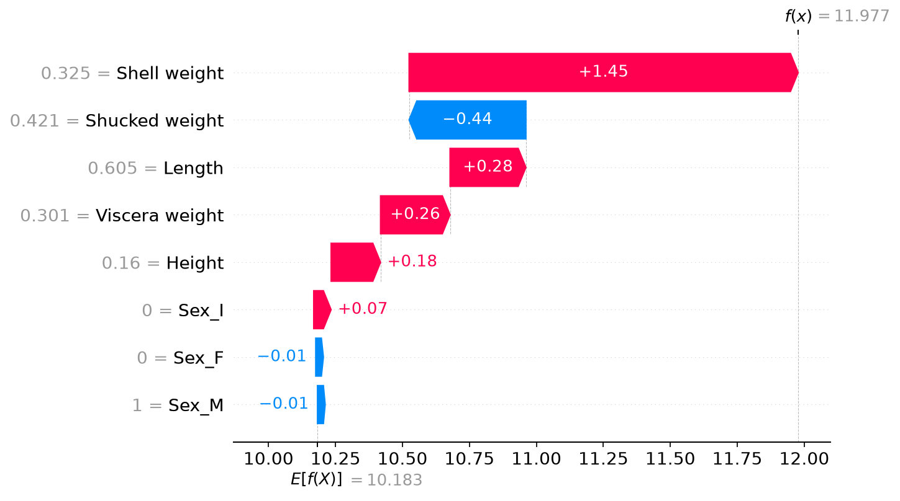
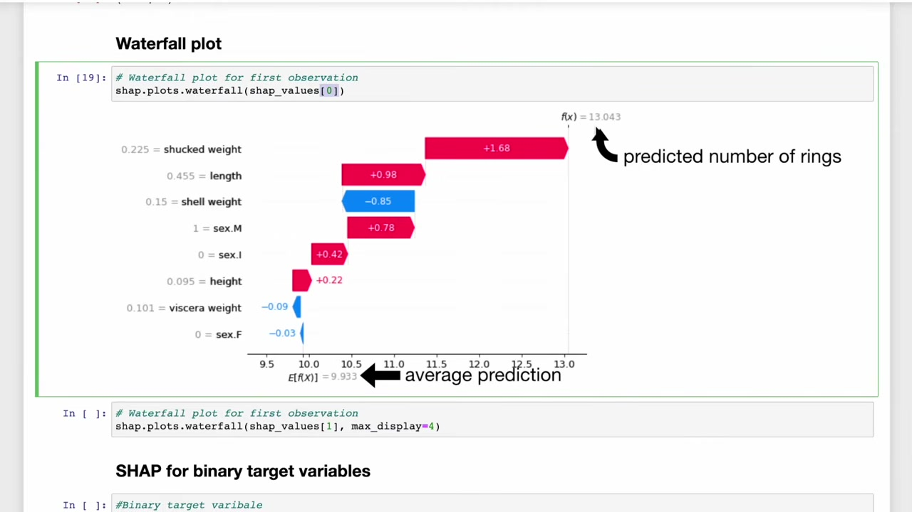

Calculate and Check SHAP Values in Python
Companion to A Data Odyssey’s video · Conor O’Sullivan
We can now explain a small model by hand. For a fitted model with hundreds of trees, the steps stay recognizable: select the output, choose a reference, compute feature contributions, and check that they reconstruct the prediction. The SHAP package takes care of the expensive calculation.
The playlist demonstrates this with the UCI Abalone dataset. An abalone is a shellfish, and the target is the number of rings in its shell. We predict that count from measurements such as length and shell weight. Our output and SHAP values will therefore be in rings. A contribution of +1.2 means +1.2 predicted rings, not a 1.2% increase.
Use the complete runnable example
Download regression.py, its helper example_data.py, and requirements.txt into the same directory. The example was tested with Python 3.12 and the pinned package versions. It downloads the public dataset, runs the calculation, and writes plots and a results file into an assets directory.
python -m venv .venv
source .venv/bin/activate
python -m pip install -r requirements.txt
python regression.pyOn Windows, activate with .venv\Scripts\activate. XGBoost on macOS also needs the OpenMP runtime; if its import reports that libomp.dylib is missing, install libomp with Homebrew. The following excerpts explain the main steps in the script.
Prepare inputs whose meaning we can follow
The dataset has 4,177 rows. Following the video’s small feature set, we omit diameter and whole weight, retain five numerical measurements, and encode the recorded sex category as three indicator columns: Sex_F, Sex_I, and Sex_M. An indicator equals 1 when its category is present and 0 otherwise.
This leaves eight model inputs. Removing two correlated measurements keeps this example manageable; it does not eliminate all dependence among the remaining measurements. Also, one-hot encoding creates separate players for the three indicators. We will return to how that affects interpretation in Part 9.
from example_data import abalone
from sklearn.model_selection import train_test_split
from xgboost import XGBRegressor
X, y, source = abalone()
X_train, X_test, y_train, y_test = train_test_split(
X, y, test_size=0.2, random_state=42
)
model = XGBRegressor(
n_estimators=200, max_depth=3, learning_rate=0.05,
objective="reg:squarederror", random_state=42, n_jobs=2
)
model.fit(X_train, y_train)Training uses 3,341 rows; evaluation uses the other 836. This is a deliberate extension of the recorded demonstration, which fits and visualizes the full dataset. Separating evaluation rows lets us assess predictions the model did not fit directly.
Check prediction quality before explaining it
Mean absolute error averages the absolute differences between predicted and observed ring counts. A model that predicts the training mean for every test row provides a simple comparison. The saved run records both errors, the exact data archive hash, package versions, and the sample sizes.
Our model’s held-out mean absolute error is 1.560 rings, compared with 2.385 rings for the constant predictor. An explanation can faithfully describe either model, including its mistakes. Better-looking SHAP plots do not replace this evaluation.
Choose reference rows and compute the explanation
import shap
background = X_train.sample(n=100, random_state=42)
rows = X_test.iloc[:200]
explainer = shap.TreeExplainer(
model,
data=background,
feature_perturbation="interventional",
model_output="raw",
)
explanation = explainer(rows)There are two different collections of rows here. background supplies reference values for hidden features. rows contains the 200 held-out examples whose predictions we want to explain. Increasing one does not automatically increase the other.
We explicitly choose background replacement and the regressor’s ordinary output. Thus the baseline is the mean model prediction over the 100 reference rows. Sampling those rows makes this a comparison with that sample, rather than an exact average over every training row.
Inspect what the package returns
| Field | Meaning in this example |
|---|---|
explanation.values | A 200 × 8 array: one contribution per explained row and feature. |
explanation.base_values | The starting output for each row; the same baseline is repeated here. |
explanation.data | The actual eight input values for each explained row. |
explanation.feature_names | Names in the same column order as the inputs and contributions. |
Keeping values, labels, and input rows together matters. A contribution for shell weight becomes misleading if it is accidentally displayed beside shucked weight. Use the Explanation object for slicing so those pieces remain aligned.
Reconstruct the output before reading a plot
import numpy as np
rebuilt = explanation.base_values + explanation.values.sum(axis=1)
np.testing.assert_allclose(
rebuilt, model.predict(rows), rtol=0, atol=2e-5
)
shap.plots.waterfall(explanation[0], max_display=8)The sum runs across the eight features in each row. The tolerance allows for small floating-point differences between the tree evaluator and the model’s prediction routine. It is tiny relative to one ring. A large mismatch would make us check feature order, preprocessing, output scale, and model identity before interpreting anything.
In our saved run, the first row starts at 10.1828 predicted rings and finishes at 11.9773. Its observed target is 9 rings. SHAP explains why the model output is 11.9773; it does not divide the difference between 11.9773 and the observed target.


The video’s original plot uses a different fitted model and data setup, so its exact numbers differ. The interpretation is the same: move from the reference prediction to one shellfish’s prediction by adding its feature contributions.


We now have a checked explanation for one row and an array containing explanations for 199 more. The next step is to ask what those rows have in common, while keeping the distinction between an individual prediction and a dataset summary.